recyclingClasificador de residuos
Escaneo inteligente para separar mejor tus residuos
delete
recycling
delete_forever
Recicla inteligentemente
Toma una foto y recibe la clasificación, la caneca correcta y la razón para desecharlo allí.
check_circleClasificación automática (Orgánicos, Reciclables y No reciclables)
check_circleIndicación de dónde depositarlo
check_circleExplicación clara del porqué
recycling
Clasificador de Residuos
Impulsado por IA
photo_cameraPulsa «Tomar foto» para escanear un residuo
Reciclable
Confianza92%
delete
Va en Caneca Blanca
cleaning_services Cómo debe estar
help Por qué
infoGuía de separación de residuos
El escáner detecta automáticamente Orgánicos, Reciclables y No reciclables. Los residuos peligrosos se incluyen como guía, pero no se detectan por foto.
recycling
Reciclables — Caneca Blanca
Materiales aprovechables que pueden volver a usarse
Pulsa para ver ejemplos
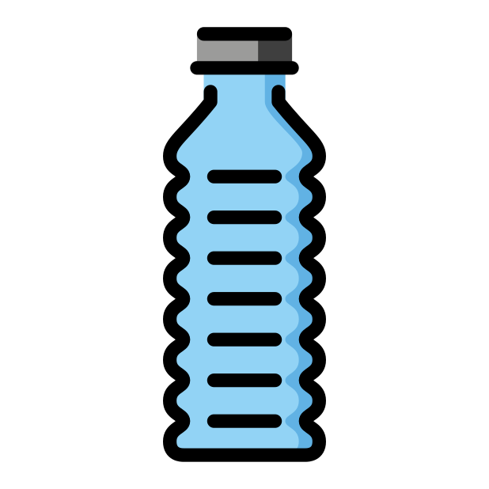
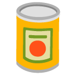
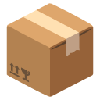
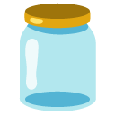
Papel
eco
Orgánicos — Caneca Verde
Residuos biodegradables de origen natural
Pulsa para ver ejemplos

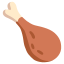
Restos de verdura
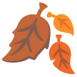
delete_forever
No reciclables — Caneca Negra
Residuos que no pueden reutilizarse ni reciclarse
Pulsa para ver ejemplos
Servilletas
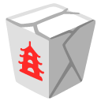
Colillas
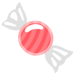
warning
Peligrosos — Punto Especial Solo informativo
Residuos tóxicos que requieren manejo especial
Pulsa para ver ejemplos
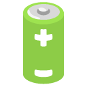
Medicamentos
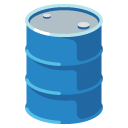
Químicos
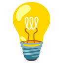
Configuración
dark_modeModo oscuro
Permisos de la aplicación
Gestiona acceso a cámara
photo_camera
Cámara
Necesario para escanear residuos